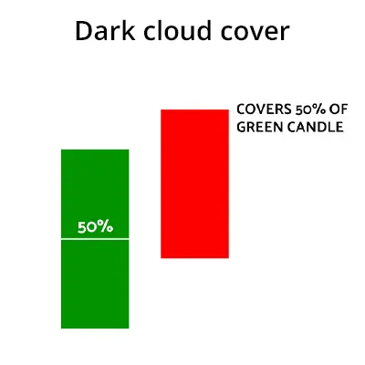

डार्क क्लाउड कवर पैटर्न एक कैंडलस्टिक पैटर्न है जो नीचे के रुख की संभावना संकेत देता है। यह एक ऊपरी उतारचढ़ाव में दिखाई देता है और एक बड़ी हरी (बल्लिश) कैंडल को शामिल करता है, जिसे एक लाल (बियरिश) कैंडल फॉलो करता है जो पिछली हरी कैंडल के बीच के मध्य से नीचे बंद होने से पहले एक नया उच्च बनाता है।
यह कैंडल फॉर्मेशन, भले ही बहुत समान लग रही हो, बिना बादलों वाली बेयरिश इंगलफ कैंडल पैटर्न से उलझाने वाली नहीं होनी चाहिए। दोनों पैटर्न एक प्रतिस्पर्धी ट्रेंड रिवर्स की संभावना दर्शाते हैं, लेकिन डार्क क्लाउड कवर बेयरिश कैंडल के बंद होने के ऊपर से अधिक यात्री के स्तर को प्रदान करती है जो कि बिना बादलों वाले बेयरिश इंगलफ कैंडल पैटर्न के साथ नहीं देखा जा सकता।
| HOW TO IDENTIFY A DARK CLOUD ON FOREX CHARTS |
Dark Cloud Cover checklist:
| HOW TO TRADE USING THE DARK CLOUD PATTERN |
ट्रेडर जीबीपी / यूएसडी या यूईआर / यूएसडी जैसी अधिक पारंपरिक ट्रेंडिंग मार्केट में ट्रेड करने की कोशिश कर सकते हैं, लेकिन वे रेंजिंग मार्केट में भी डार्क क्लाउड कवर तकनीकी विश्लेषण को शामिल कर सकते हैं।
Trending markets
निम्नलिखित में फॉरेक्स में डार्क क्लाउड कवर पैटर्न का एक उदाहरण है, विशेष रूप से, GBP/USD फॉरेक्स पेयर में। अधिक जानकारी के लिए चार्ट का संदर्भ देखें।
This Dark Cloud Cover checklist can be used to analyze a potential trade:
प्रवेश स्तर, लक्ष्य और रोक आसानी से पहचाने जा सकते हैं जब नीचे दिए गए चार्ट को देखा जाता है। प्रवेश अगली मोमबत्ती के खुलने पर स्थापित किया जा सकता है, जब डार्क क्लाउड कवर पैटर्न बन जाता है।

स्विंग उच्चतम स्तर और हाल के सहायक / प्रतिरोध स्तरों पर रोक लगाई जा सकती है और प्रारंभिक लक्ष्य स्तर को महत्वपूर्ण स्तरों या हाल के सहायक / प्रतिरोध क्षेत्रों पर निर्धारित किया जा सकता है। ध्यान देने योग्य है कि यह ट्रेड एक विस्तारित नीचे की ओर चलने की शुरुआत होने की संभावना है, इसलिए ट्रेडर्स कई लक्ष्य स्तर सेट कर सकते हैं।